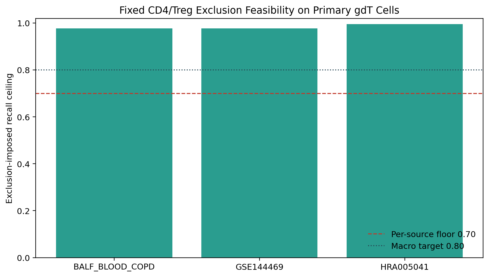
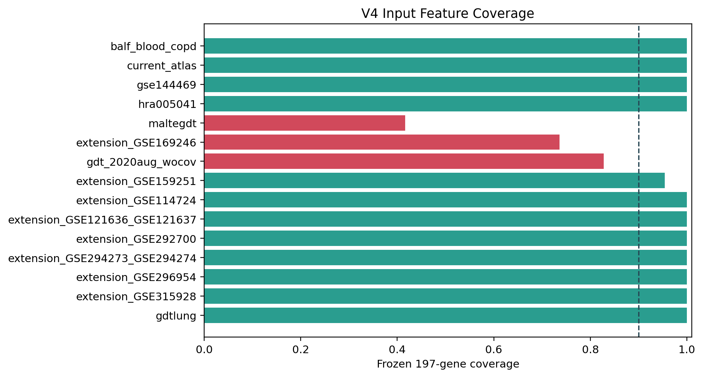
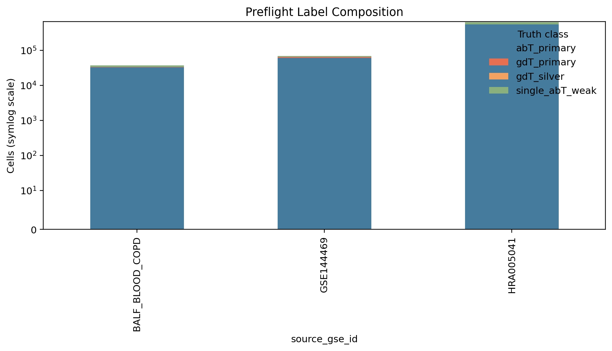

Overall status: PASS
Protocol:
v1.2
Training started: No
Step 2
authorized: No; supervision approval is still required
This workflow performed only the precommitted read-only input, truth-label, feature, exclusion-feasibility, and grouped-split checks. It did not fit, calibrate, threshold, compare, or promote a classifier.
Failures block Step 2. Warnings require explicit supervision. The frozen CD4/Treg thresholds were evaluated exactly as written and were not tuned.
No rows.
No rows.
| check_id | status | observed | required | details |
|---|---|---|---|---|
| protocol_version | PASS | 1.2 | 1.2 | Frozen protocol version |
| feature_count | PASS | 197 | 197 | Frozen individual-gene universe |
| training_feature_coverage | PASS | >=0.9 and all critical genes | Hard-gated development inputs | |
| expression_input_contract | PASS | [‘hra005041’] | raw counts, except registered HRA005041 passing full log1p(CP10K) audit | Full sparse data-array and inverse-library-size scan |
| registered_hashes | PASS | all available expected hashes match | Full SHA-256 unless explicitly skipped | |
| input_file_state | PASS | 16 | 16 | Size and mtime unchanged after read-only workflow |
| gse144469_join | PASS | 107068 | 107068 unique SRR + barcode mappings | Raw expression to canonical metadata |
| primary_labels_nonempty | PASS | {‘abT_primary’: {‘BALF_BLOOD_COPD’: 32404, ‘GSE144469’: 60175, ‘HRA005041’: 543028}, ‘gdT_primary’: {‘BALF_BLOOD_COPD’: 1033, ‘GSE144469’: 4003, ‘HRA005041’: 4894}} | both classes in each primary source | Expression-independent productive TCR rules |
| primary_label_overlap | PASS | 0 | 0 | Mutually exclusive primary labels |
| sensitivity_excluded_from_training | PASS | 0 | 0 | Silver and all sorted cohorts are sensitivity-only |
| cd4_treg_recall_ceiling | PASS | 0.983805 | macro >= 0.8; each source >= 0.7 | Fixed post-model exclusions before Step 2 |
| group_leakage | PASS | 1 | 1 | No group appears in multiple inner folds |
| outer_fold_nonempty | PASS | 1 | True | Every stage has train and held-out cells |
| nk_stratum_composition | PASS | {‘representative’: 0.6, ‘gdt_like_TRDCpos_TRDVneg’: 0.2, ‘t_like_hard’: 0.2} | {‘representative_fraction’: 0.6, ‘t_like_fraction’: 0.2, ‘gdt_like_fraction’: 0.2} | All strict NK negatives assigned once |
| supplemental_nk_pool | PASS | 323771 | >0 | Mapped, no-productive-TCR atlas NK negatives |
| legacy_v4_archived | PASS | True | True | No overwrite of the earlier experimental artifact |
The recall ceiling is 1 - union_excluded / gdT_primary.
It is the maximum post-exclusion recall even for a perfect pre-exclusion
classifier.

| source_gse_id | n_cells | cd4_helper_only | treg_only | overlap | union_excluded | recall_ceiling | applicable_floor | margin_above_floor |
|---|---|---|---|---|---|---|---|---|
| BALF_BLOOD_COPD | 1033 | 22 | 1 | 0 | 23 | 0.9777 | 0.7000 | 0.2777 |
| GSE144469 | 4003 | 65 | 6 | 18 | 89 | 0.9778 | 0.7000 | 0.2778 |
| HRA005041 | 4894 | 20 | 0 | 0 | 20 | 0.9959 | 0.7000 | 0.2959 |
| SOURCE_MACRO | 9930 | 107 | 7 | 18 | 132 | 0.9838 | 0.8000 | 0.1838 |

| input_id | role | features_present | features_expected | feature_coverage | missing_critical_count | hard_feature_gate |
|---|---|---|---|---|---|---|
| current_atlas | stage1_NK_expression_and_future_atlas_inference | 197 | 197 | 1.0000 | 0 | True |
| hra005041 | primary_development | 197 | 197 | 1.0000 | 0 | True |
| gse144469 | primary_development | 197 | 197 | 1.0000 | 0 | True |
| balf_blood_copd | primary_development_reused_benchmark | 197 | 197 | 1.0000 | 0 | True |
| gdt_2020aug_wocov | sorted_sensitivity_only | 163 | 197 | 0.8274 | 0 | False |
| maltegdt | sorted_sensitivity_only | 82 | 197 | 0.4162 | 0 | False |
| gdtlung | sorted_sensitivity_only | 197 | 197 | 1.0000 | 0 | False |
| extension_GSE114724 | frozen_negative_stress | 197 | 197 | 1.0000 | 0 | False |
| extension_GSE121636_GSE121637 | frozen_negative_stress | 197 | 197 | 1.0000 | 0 | False |
| extension_GSE159251 | frozen_negative_stress | 188 | 197 | 0.9543 | 0 | False |
| extension_GSE169246 | reduced_feature_schema_sensitivity | 145 | 197 | 0.7360 | 0 | False |
| extension_GSE292700 | frozen_negative_stress | 197 | 197 | 1.0000 | 0 | False |
| extension_GSE294273_GSE294274 | frozen_negative_stress | 197 | 197 | 1.0000 | 0 | False |
| extension_GSE296954 | frozen_negative_stress | 197 | 197 | 1.0000 | 0 | False |
| extension_GSE315928 | frozen_negative_stress | 197 | 197 | 1.0000 | 0 | False |
Every stored sparse value was scanned. Raw inputs must be finite,
nonnegative, and integer-like within 1e-6.
The registered HRA005041 exception must additionally reconstruct a
per-cell library sum of 10,000 from expm1(X) within the
frozen absolute tolerance.
| input_id | matrix_key | configured_matrix_state | n_obs | nnz | raw_count_pass | transformed_max_abs_deviation | transformed_rows_outside_tolerance | expression_contract_pass |
|---|---|---|---|---|---|---|---|---|
| current_atlas | X | raw_counts | 3705306 | 5503996785 | True | 0 | True | |
| hra005041 | X | log1p_cp10k_registered | 766639 | 1442826937 | False | 0.0000 | 0 | True |
| gse144469 | layers/counts | raw_counts | 107068 | 215368848 | True | 0 | True | |
| balf_blood_copd | layers/counts | raw_counts | 46273 | 125599864 | True | 0 | True | |
| gdt_2020aug_wocov | X | raw_counts | 25904 | 39050646 | True | 0 | True | |
| maltegdt | X | raw_counts | 7800 | 12020698 | True | 0 | True | |
| gdtlung | X | raw_counts | 15175 | 15468404 | True | 0 | True | |
| extension_GSE114724 | X | raw_counts | 28652 | 50878640 | True | 0 | True | |
| extension_GSE121636_GSE121637 | X | raw_counts | 18793 | 28893248 | True | 0 | True | |
| extension_GSE159251 | X | raw_counts | 68898 | 81434083 | True | 0 | True | |
| extension_GSE169246 | X | raw_counts | 354373 | 430559363 | True | 0 | True | |
| extension_GSE292700 | X | raw_counts | 78254 | 127198003 | True | 0 | True | |
| extension_GSE294273_GSE294274 | X | raw_counts | 55744 | 111603853 | True | 0 | True | |
| extension_GSE296954 | X | raw_counts | 86608 | 122094020 | True | 0 | True | |
| extension_GSE315928 | X | raw_counts | 66813 | 91568523 | True | 0 | True |

| source_gse_id | truth_class | n_cells |
|---|---|---|
| BALF_BLOOD_COPD | abT_primary | 32404 |
| BALF_BLOOD_COPD | dual_or_ambiguous | 2938 |
| BALF_BLOOD_COPD | gdT_primary | 1033 |
| BALF_BLOOD_COPD | gdT_silver | 31 |
| BALF_BLOOD_COPD | single_abT_weak | 3923 |
| BALF_BLOOD_COPD | unlabeled | 280 |
| GDT_2020AUG_woCOV | sorted_sensitivity | 25904 |
| GDTlung2023july_7p | sorted_sensitivity | 15175 |
| GSE125527 | unlabeled | 3797 |
| GSE144469 | abT_primary | 60175 |
| GSE144469 | dual_or_ambiguous | 5857 |
| GSE144469 | gdT_primary | 4003 |
| GSE144469 | gdT_silver | 415 |
| GSE144469 | single_abT_weak | 3379 |
| GSE144469 | unlabeled | 8662 |
| GSE145926 | unlabeled | 361 |
| GSE162498 | unlabeled | 129 |
| GSE171037 | unlabeled | 225 |
| GSE178882 | unlabeled | 5493 |
| GSE188620 | unlabeled | 20162 |
| GSE190870 | unlabeled | 1 |
| GSE211504 | unlabeled | 303 |
| GSE212217 | unlabeled | 25627 |
| GSE228597 | unlabeled | 17507 |
| GSE234069 | unlabeled | 136 |
| GSE235863 | unlabeled | 18132 |
| GSE240865 | unlabeled | 364 |
| GSE243013 | unlabeled | 42490 |
| GSE243572 | unlabeled | 17075 |
| GSE243905 | unlabeled | 18659 |
| source_gse_id | source_cells | source_unique_keys | canonical_cells | canonical_unique_keys | mapped_cells | unmapped_cells | mapping_fraction | source_duplicate_keys | canonical_duplicate_keys | obs_sample_disagrees_with_id_srr | obs_sample_barcode_unique_keys |
|---|---|---|---|---|---|---|---|---|---|---|---|
| GSE144469 | 107068 | 107068 | 107068 | 107068 | 107068 | 0 | 1.0000 | 0 | 0 | 16851 | 90217 |
| outer_fold_id | heldout_source | stage | outer_train_cells | outer_train_positive | outer_eval_cells | outer_eval_positive | outer_train_groups |
|---|---|---|---|---|---|---|---|
| outer_0_HRA005041 | HRA005041 | stage1 | 437630 | 105801 | 634293 | 629342 | 741 |
| outer_0_HRA005041 | HRA005041 | stage2 | 104917 | 5036 | 627813 | 4894 | 28 |
| outer_1_GSE144469 | GSE144469 | stage1 | 995704 | 666728 | 76219 | 68415 | 722 |
| outer_1_GSE144469 | GSE144469 | stage2 | 665173 | 5927 | 67557 | 4003 | 25 |
| outer_2_BALF_BLOOD_COPD | BALF_BLOOD_COPD | stage1 | 1034283 | 697757 | 37640 | 37386 | 754 |
| outer_2_BALF_BLOOD_COPD | BALF_BLOOD_COPD | stage2 | 695370 | 8897 | 37360 | 1033 | 41 |
| input_id | role | size_bytes | sha256 | expected_hash_match |
|---|---|---|---|---|
| current_atlas | stage1_NK_expression_and_future_atlas_inference | 73350311676 | 9060920d6fe19bdb | True |
| legacy_metadata_reference | read_only_TCR_and_GSE144469_metadata_reference | 24383355208 | f44bd4941a7b8c8d | True |
| hra005041 | primary_development | 19626113528 | fc9ead68c3d85232 | True |
| gse144469 | primary_development | 1536829723 | 456b2da064c9ad60 | True |
| balf_blood_copd | primary_development_reused_benchmark | 2110825599 | acf33fcc3851f77c | True |
| gdt_2020aug_wocov | sorted_sensitivity_only | 591495928 | 650f583b85f05ede | True |
| maltegdt | sorted_sensitivity_only | 179862512 | bbd460ef153ce6b2 | True |
| gdtlung | sorted_sensitivity_only | 276869875 | d5915e6b50241ff8 | True |
| extension_GSE114724 | frozen_negative_stress | 131909269 | 394425c7937432ac | True |
| extension_GSE121636_GSE121637 | frozen_negative_stress | 77281297 | b7182274cab834f1 | True |
| extension_GSE159251 | frozen_negative_stress | 223142214 | abe6502b3a15a3ba | True |
| extension_GSE169246 | reduced_feature_schema_sensitivity | 2176683186 | f251382c62109a48 | True |
| extension_GSE292700 | frozen_negative_stress | 326784213 | 78c9ada980a21592 | True |
| extension_GSE294273_GSE294274 | frozen_negative_stress | 289243072 | 6a20d61544c7cd33 | True |
| extension_GSE296954 | frozen_negative_stress | 304970784 | f3484482e35b49d3 | True |
| extension_GSE315928 | frozen_negative_stress | 253771849 | 2fe674761db67aa3 | True |
Integrated_dataset/tables/gdT_prediction/gdtai_v4_preflight/cell_label_manifest.csv.gzIntegrated_dataset/tables/gdT_prediction/gdtai_v4_preflight/inner_group_split_manifest.csv.gzIntegrated_dataset/tables/gdT_prediction/gdtai_v4_preflight/preflight_checks.csvIntegrated_dataset/logs/gdT_prediction/gdtai_v4_preflight/preflight_summary.jsongdT_prediction/gdtai_v4_preflight/index.htmlgdT_prediction/gdtai_v4_preflight/gdtai_v4_preflight_report.pdfStop before Step 2. No model fitting is permitted until the user reviews this package and explicitly approves the next gate.